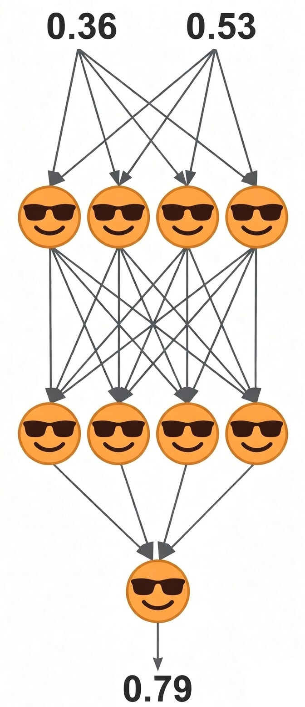

✨ Mind‑Extending Course
HOW MACHINES LEARN AND THINK
The Surprisingly Simple Math Behind Modern AI
For kids (10+) and adults

This course is the shortest and easiest way to understand how modern AI systems — called Transformers (like ChatGPT, Claude, Gemini, and Grok) — actually work under the hood.
You’ll discover how they think and, most importantly, how they learn.
Use this knowledge for fun, curiosity, or to build a top‑tier career in today’s AI-driven world.
No prior math or coding is required. If you know that 5 ÷ 4 = 1.25 and 2 − 3 = −1, you’re ready.
Our Machine Intelligence School takes a first‑principles approach — focused on building a deeper intuition. No jargon — just clear insights into how modern AI actually works.
You’ll uncover all the core mechanisms behind modern AI, including:
Our course is carefully designed to be accessible and valuable to a remarkably wide audience — from curious kids as young as 10 to adults exploring a career change, as well as both professionals and university students who specialise in AI and seek deeper conceptual clarity.
Even world-class educational resources — including Harvard, MIT, and Stanford courses; leading textbooks; and creators like 3Blue1Brown — assume learners already have some background in both math and coding.
This assumption effectively excludes most people. For true beginners, such material inevitably feels either overwhelmingly technical or frustratingly vague.
Our approach is fundamentally different. The material is neither vague nor overly technical — just deep and clear.
We use our unique:
With this approach, everything becomes crystal clear.
Try the Trial Class — to see how this works.
Hey explorers! 🎉
Today we’re diving into something amazing: the real secrets of how machines learn and think.
Ready? Let’s begin.
Nowadays, there are two kinds of minds: biological and machine.
The main job of every mind — whether biological or machine — is to learn and think.
And here’s something surprising: at their core, learning and thinking are actually just doing math. Yes, really!
And it’s simple math, not the scary kind from school.
The cool part? Machine minds aren’t just built — they learn on their own, so it’s more like we are growing them rather than building them like a robot.
How is this possible? In this course, you’ll discover the answer.
Every mind is, in essence, a NEURAL NETWORK.

It’s called "NEURAL" because it consists of NEURONS.
And it’s called "NETWORK" because the NEURONS connect to each other.
We can think of each NEURON as a tiny yet cool creation.
NEURONS are like tiny helpers that learn and think on their own, helping the whole mind get smarter.
But what does every NEURON do?
Actually, every NEURON takes in input SIGNALS and then sends out one output SIGNAL.
For example, a NEURON might take in two input SIGNALS and then send out one output SIGNAL:
| input SIGNAL | input SIGNAL |
| ↓ | ↓ |
| 😎 | |
| ↓ | |
| output SIGNAL | |
What is a SIGNAL?
Generally, a SIGNAL is just anything — like an electric impulse — that can be measured or calculated and then represented as a number. For example: 0.36 or 0.53.
At this point, we don’t need to worry about how SIGNALS are measured or calculated. We just need to remember that:
Every SIGNAL is something that can be represented as a number.
In more detail, every NEURON:
| 0.36 | 0.53 | input SIGNALS |
| ↓ | ↓ | |
| 😎 | ||
| ↓ | ||
| 0.79 | output SIGNAL | |
For brevity:
| 0.36 | 0.53 | INPUTS |
| ↓ | ↓ | |
| 😎 | ||
| ↓ | ||
| 0.79 | OUTPUT | |
The Key Insight
An OUTPUT from one NEURON can become an INPUT for another NEURON that comes next — connecting the whole team together!
Scale: Billions of NEURONS
There may be up to billions of NEURONS in a single neural network — whether in a human brain or in a large AI model such as a Transformer.
When a mind thinks, every NEURON really does very simple math.
At its core, every NEURON works just like a shopping bill.
Analogy: The Shopping Bill
Imagine buying donuts and cupcakes:
| shopping bill | |||
| UNITS | PRICE PER UNIT | AMOUNT | |
| donut | 4 | 2.00 | 8.00 |
| cupcake | 2 | 3.00 | 6.00 |
| SUM | 14.00 | ||
| DISCOUNT | -0.50 | ||
| TOTAL | 13.50 | ||
The math is simple:
This math can also be represented this way:
| 4.00 | 2.00 | UNITS |
| 2.00 | 3.00 | PRICES |
| 8.00 | 6.00 | AMOUNTS |
| 14.00 | SUM | |
| -0.50 | DISCOUNT | |
| 13.50 | TOTAL | |
At its core, the shopping bill is just a formula:
In terms of a NEURON, the same math can be represented this way:
| 4.00 | 2.00 | INPUTS |
| 2.00 | 3.00 | WEIGHTS |
| 8.00 | 6.00 | PRODUCTS |
| 14.00 | SUM | |
| -0.50 | BIAS | |
| 13.50 | OUTPUT | |
At its core, every NEURON is also just a formula:
Ultra simple. No math changed. Only names changed.
Importantly, if UNITS change, the shopping bill changes its TOTAL:
| 3.00 | 5.00 | UNITS |
| 2.00 | 3.00 | PRICES |
| 6.00 | 15.00 | AMOUNTS |
| 21.00 | SUM | |
| -0.50 | DISCOUNT | |
| 20.50 | TOTAL | |
Similarly, if INPUTS change, the NEURON changes its OUTPUT:
| 3.00 | 5.00 | INPUTS |
| 2.00 | 3.00 | WEIGHTS |
| 6.00 | 15.00 | PRODUCTS |
| 21.00 | SUM | |
| -0.50 | BIAS | |
| 20.50 | OUTPUT | |
Again, no math changed. Only names changed.
The mapping:
| SHOPPING BILL | → | NEURON |
| UNITS | → | INPUTS |
| PRICES | → | WEIGHTS |
| AMOUNTS | → | PRODUCTS |
| SUM | → | SUM |
| DISCOUNT | → | BIAS |
| TOTAL | → | OUTPUT |
The WEIGHTS and BIAS are called PARAMETERS.
If you understand this, you already understand a lot of AI.
To quickly understand the essence of how machines learn and think, let’s start by growing the simplest possible mind: a one-neuron mind. A single NEURON. That’s it.
Moreover, this NEURON will only have one PARAMETER: one WEIGHT — no other WEIGHTS and no BIAS. A single WEIGHT. That’s it.
This tiniest-ever mind will first learn from its own errors. Then, after learning, it will be able to think — solving problems it has never encountered before.
Indeed, this is the essence of every genuine mind: solving problems it has never encountered before.
The tiniest-ever mind is the perfect starting point.
Let’s see how it works.
Join
then the rest of the